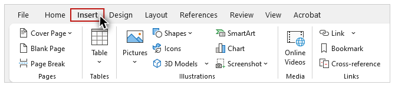
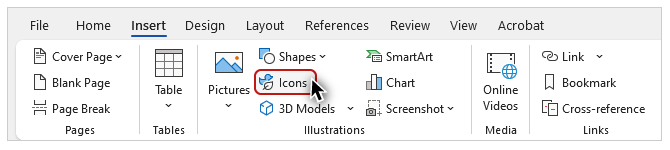
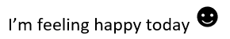
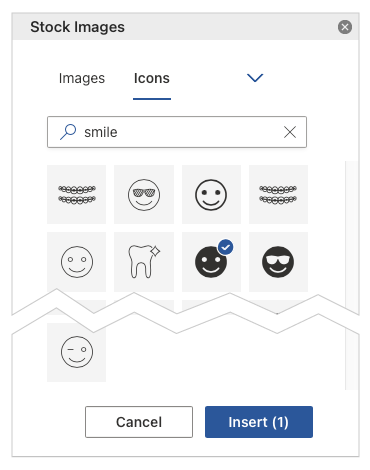
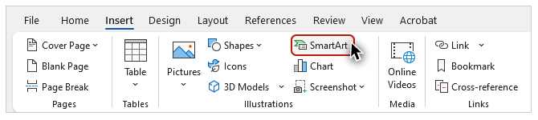
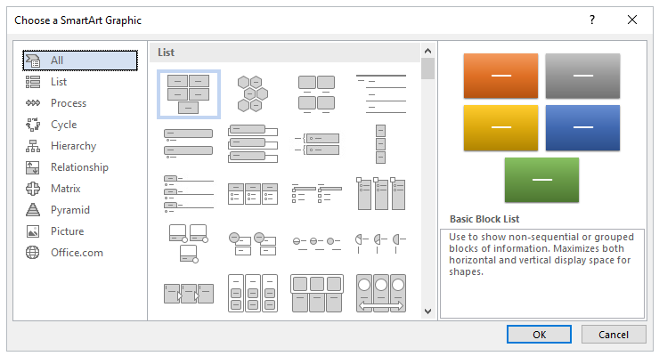
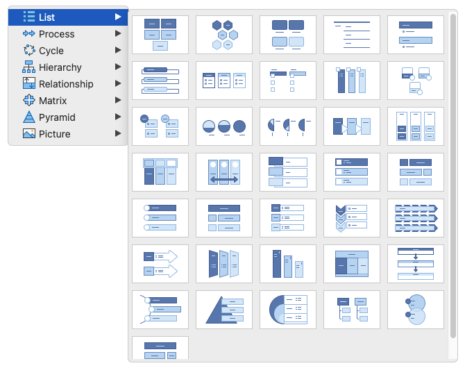
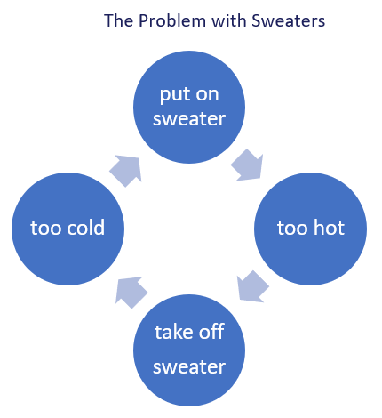
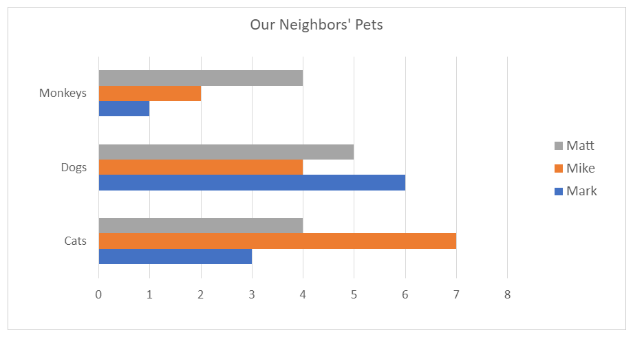

Video
Example File
Guide
Images: Part 2
Part 1 focused on providing alternative text for images created with the Pictures tool. This video will focus on providing alternative text for icons, SmartArt, and charts.
Objectives
- Identify the process for providing alternative text for an image created with the Icon tool.
- State the method for providing alternative text for SmartArt images.
- Describe how to provide alternative text for charts.
Icons
Most people are familiar with a specific type of icon–the emoji.
Emojis created by Office 365
By default Office 365 will convert certain character combinations into an image. To demonstrate I’ll open the example file on Word running on Windows. Under the Emojis and Icons heading I’ll type in the text “I’m feeling happy today” followed by a colon and a right parenthesis mark. Word automatically replaces these last two characters with an emoji of a smiling face.
Inserting an Emoji with the keyboard
In both Windows and Mac, you can insert emojis into almost any document. In Windows, press the Windows key + “.”, and in Mac, press the command + control + Space keys.
Inserting an Icon
In addition to emojis, Office gives you access to a group of Icons with descriptive alternative text. To access these icons, I’ll type the same sentence, but this time I’ll use Office’s icon for the smiling face. To display the Icon tool, on the Ribbon I’ll select the Insert tab.

When I click the Icon tool, a dialog window opens displaying a gallery of icons.

I’ll type the text “smile” into the search tool, select this version with white eyes and mouth over a black background fill, and click the “Insert” button.

On a Mac, the icons are displayed in the “Stock Images” panel on the right-hand side of the user interface.

Screen reading software demonstration #1
To demonstrate how screen reading software reads emojis and icons, I’ll open up NVDA and read these two sentences:
“I’m feeling happy today smiling face with smiling eyes. I’m feeling happy today (embedded object), smiling face with solid fill with solid fill.”
[narrator resumes]
An emoji is not identified as a graphic, and it already has the document structure needed to support screen reading software. Icons are identified as an embedded object, and have a default Alt Text value, which in this case needs some improvement.
Editing an Icon's Alt Text
I’ll right-click the “smile” icon, and select “Edit Alt Text”. On the Alt Text panel I can see the default value: “Smiling face with solid fill with solid fill”. I definitely want to remove the redundant text, and because the information about a solid fill is not relevant to my context, I’m going to edit this value to just “Smiling face”.
Be careful not to repeat the same emoji or icon multiple times to add emphasis. Adding a dozen smiling faces to show that you are very happy may cause a screen reader to read “smiling face with smiling eyes” twelve times.
SmartArt graphics
Next I’ll return to the Insert tab and click on the SmartArt tool.

The “Choose a SmartArt Graphic” dialog opens.

The interface for this tool looks different on a Mac, but the categories and different styles of graphics are very similar.

As I select some of the different categories––such as List, Process, and Cycle––different styles are displayed. The style used in our example file is called “Basic Cycle.”

This example has text of “The Problem with Sweaters” directly above the graphic. This text has been formatted as a Heading 3.
Adding Alt Text to SmartArt
To add Alt Text, I’ll select the entire SmartArt graphic. All of the objects in a graphic are grouped by default. To select this group, I’ll make sure that my cursor is not positioned over any single object, and I’ll click with my mouse. Then I’ll right click and select “Edit Alt Text” from the menu. For this example, I’ll make sure that the Alt Text is equivalent by addressing three components of the visual information provided by the graphic:
- The type of graphic (a continuous cycle).
- The number of steps (four).
- The text on each of the steps.
Screen reading software demonstration #2
I’ll reopen NVDA, and read this example:
“Heading level three; The Problem with Sweaters (embedded object); A continuous cycle with four steps: put on sweater, too hot, take off sweater, too cold.”
[narrator resumes]
In the SmartArt example, I was able to put all of the important visual information in the Alt Text, but sometimes there will be images that present too much information for the Alt Text field.
Charts
This is often the case with Charts. The Charts example shows a clustered column chart with data gathered by three boys—Mark, Mike, and Matt—from a survey of neighbors.

The boys have recorded which neighbors own one or more of these pets: cats, dogs, and monkeys.
Adding Alt Text to a Chart
I will put the high-level information provided by the chart in the chart’s Alt Text. To select the chart area I’ll position my mouse inside the chart, but not over any chart element, right-click the chart, and select “Edit Alt” text. The Alt Text I’ll add has three components:
- The chart’s title.
- The type of chart.
- A succinct summary of the chart’s information.
Screen reading software demonstration #3
I’ll reopen NVDA once more to read this example:
“Chart: Our Neighbors’ Pets; Clustered columns of the pets owned by the neighbors of Mark, Mike, and Matt".
[narrator resumes]
We recommend providing the longer text description of the data presented in a chart as: a data table with proper headers, or a narrative in the document text. Either are usually placed right after the chart, but you can also link to an Appendix at the end of a document in Word (as modeled in the example), or on a separate slide in PowerPoint.
A table is often the best structure to present this information. You will learn principles and processes for optimizing tables in Module 2.
When providing the information in document text, use structure to avoid large blocks of text. For example, the narrative text for this chart is organized using headings and lists.
Additional principles and processes for optimizing charts are provided in the bonus Module 5: Optimizing Excel.
Now that you have learned how to provide alternative text for Icons, SmartArt, and Charts, you’re ready to learn how to position images in Word, to ensure they are accessible to all users.